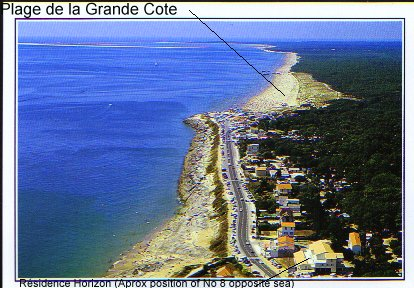

This an extract from the brochure of the hotel next door (Les Falaises) which includes a splendid aerial view of the coast. The white circle towards the bottom right hand corner of the brochure includes the Les Falaises restaurant (building on left hand side nearest the road), the hotel (building set back furthest from the road) and Résidence Horizon (the tallest building of the three, in the foreground).
Mouse over the brochure page for a description of each inset.
(Reproduced with kind permission of Auberge Les Falaises)
This postcard is still on sale even though the photograph was taken nearly ten years ago when Résidence Horizon was still being built. It looks like it was taken in the high season, judging from the number of people using the little beach opposite the apartment.
Finally, here is a satelite image (courtesy of Google Maps)